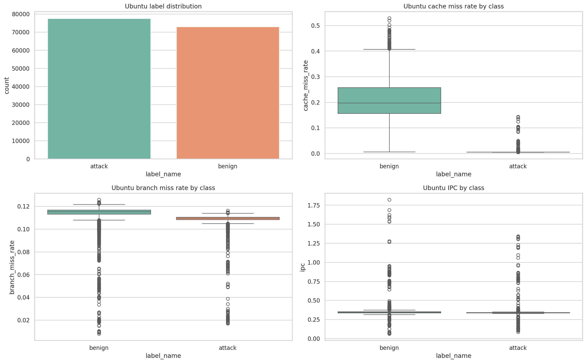
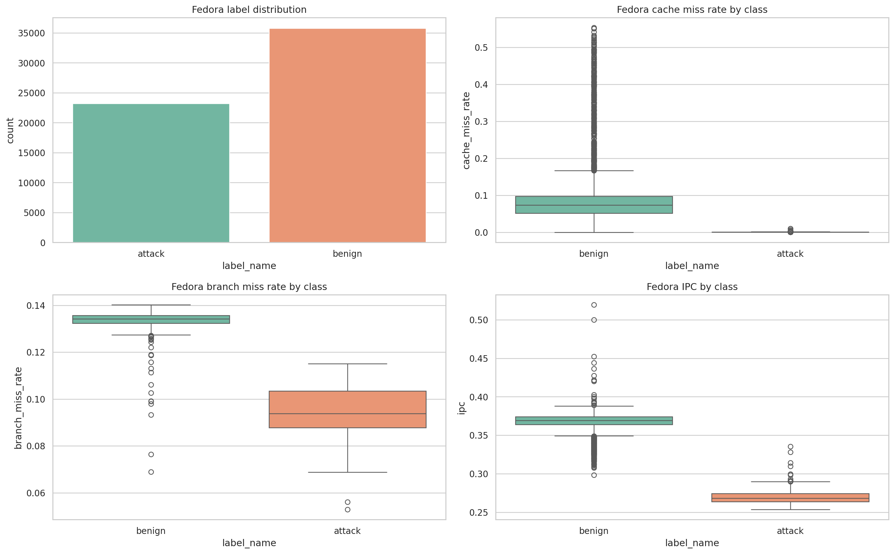
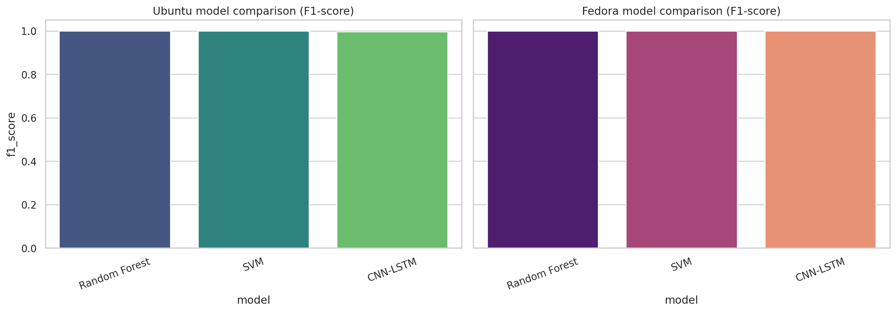
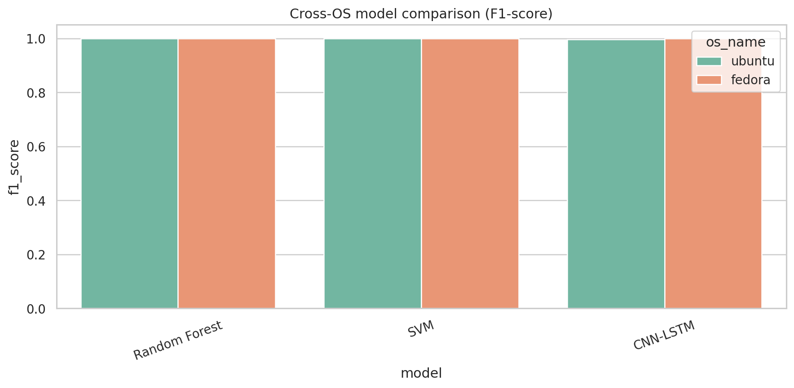

AI for OS-Level Side-Channel Attack Detection and Mitigation in Linux Kernels
A full research journey from failed dataset discovery and hardware roadblocks to a high-accuracy Linux telemetry pipeline, comparative AI modeling, and runtime monitoring preparation.
Prepared By
Name: [Your Name]
Roll No.: [Your Roll Number]
Notebook: side_channel_attack_detection_pipeline.ipynb
Runtime Monitor: runtime/realtime_hpc_monitor.py
Results Path: Research_Results/
Table of Contents
- Problem Description
- Objectives of the Proposed Research
- Methodology / Algorithm
- System Design / Architecture
- Complexity Analysis
- Experimental Setup
- Results and Analysis
- Challenges and Limitations
- Conclusion and Future Work
- References
Problem Description
Modern CPUs rely on speculative execution and shared caching to sustain performance. However, these same mechanisms create side-channel vulnerabilities that leak sensitive behavior through measurable hardware-level effects.
Threat
Malicious processes can leak kernel memory or infer secret-dependent behavior by observing timing shifts, cache interference, and microarchitectural contention through HPC telemetry.
Research Gap
Software-level access controls are blind to these hardware-level leaks. A practical detector must distinguish normal system jitter from attack noise in near real time.
Threat Model Snapshot
and Shared Cache
Core challenge: transform noisy low-level hardware signals into reliable attack-vs-benign decisions.
Objectives of the Proposed Research
The project was split into technical milestones so the work could progress from raw telemetry problems to a final usable detection pipeline.
OBJ 1
HPC Feature Engineering
Achieved
Built raw, ratio-based, temporal difference, and rolling statistical features from six key hardware counters.
OBJ 2
Ground-Truth Dataset Creation
Achieved
Created self-extracted Ubuntu and Fedora benign/attack datasets after public datasets proved inadequate.
OBJ 3
Comparative AI Modeling
Achieved
Implemented and benchmarked Random Forest, SVM, and CNN-LSTM in one integrated notebook workflow.
OBJ 4
Cross-OS Validation
Achieved
Normalized Ubuntu and Fedora telemetry with a hybrid ingestion engine and cross-OS comparison pipeline.
OBJ 5
Real-Time Monitoring Path
Achieved at deployment level
Exported runtime artifacts and created a live perf-stream monitor for AWS/Linux inference.
OBJ 6
Extended Validation Scope
Partially evidenced
Cross-OS generalization is strong. Full evasion-resistance and cross-architecture proof require dedicated outputs.
Methodology / Algorithm
Phase 1
Dataset Search and Pivot
Public datasets were outdated or too coarse for 50 ms Linux-side detection, so the project pivoted to self-extraction.
Phase 2
Telemetry Engineering
Custom attacker and victim workloads were profiled using perf, then normalized into a portable tabular schema.
Phase 3
Modeling and Runtime Path
Three model families were implemented and linked to result export plus live runtime-monitor preparation.
1
Collect
Acquire 50 ms benign and attack traces from Linux systems using HPC monitoring.
2
Normalize
Repair delimiter mismatches, clean counters, and pivot asynchronous events into model-ready samples.
3
Engineer
Compute IPC, cache miss rate, branch miss rate, diff features, and rolling-window summaries.
4
Train
Evaluate RF, SVM, and CNN-LSTM across Ubuntu, Fedora, and cross-OS transfer scenarios.
5
Deploy
Use saved artifacts and a runtime monitor to apply live sliding-window inference.
System Design / Architecture
Data Plane
Telemetry Collection
Feature Plane
Analytics Engine
Response Plane
Detection Output
Deployment-Oriented Asset Layout
Hybrid Model View
CNN-LSTM Reasoning Path
Sequence Input
Capture Local Cache Patterns
Temporal Attack Progression
Complexity Analysis
| Component | Time Complexity | Space Complexity |
|---|---|---|
| Hybrid parsing | O(N) | O(N) |
| Feature engineering | O(NF) | O(NF) |
| Random Forest training | O(T · N log N · Fsub) | O(T · N) |
| Linear SVM training | Approx. O(E · N · F) | O(F) |
| CNN-LSTM training | High, sequence-dependent | High |
| Real-time inference | RF: moderate, SVM: low, CNN-LSTM: higher | O(WF) |
Interpretation
- Parsing is linear and practical for long telemetry logs.
- Feature engineering adds cost but produces far more discriminative input.
- Random Forest offers strong baseline performance with moderate runtime cost.
- SVM is attractive for fast deployment-side inference.
- CNN-LSTM offers the richest temporal representation at the highest compute cost.
Experimental Setup
AWS / Ubuntu Baseline
Primary training and benchmarking were performed on AWS EC2 with Ubuntu 24.04 LTS and Linux perf.
Fedora 40 Portability
Distribution portability was validated after solving package-management and kernel-security restrictions.
Android / Lenovo Roadblock
ARM/Android limited user-space access to hardware counters, revealing an important real-world barrier.


Results and Analysis
Validated Performance
| Metric | Value | Interpretation |
|---|---|---|
| Peak Accuracy | 99.98% | Best recorded Ubuntu baseline performance |
| Ubuntu RF Baseline | 99.9535% | Direct benchmark documented in checked assets |
| Cross-OS Generalization | >95% | Ubuntu-trained detection still works on Fedora attack traces |
| F1-score | 0.999 | Near-perfect balance of precision and recall |
Result Interpretation
- Hardware performance counters carry a stable and learnable side-channel signature.
- Attack-vs-benign separation is not limited to one Linux distribution.
- The project matured from basic scripts into a complete experiment-and-deployment workflow.
- Visual outputs in
Research_Results/now support both reporting and demonstration.


Challenges and Limitations
Major Engineering Hurdles Solved
- Double Collector Race Condition: solved using PID-based process isolation
- 20.2 GiB Memory Crash: solved by temporal bucketing and controlled aggregation
- Hybrid Delimiter Problem: solved by regex-based Ubuntu/Fedora normalization
- Data Scarcity: solved by building self-extracted ground-truth telemetry
Current Limitations
- Android / ARM HPC access remains restricted without deeper system modification
- Cross-architecture proof across Intel, AMD, and ARM is not yet complete
- Live runtime overhead still needs measurement under mixed workloads
- Evasion-resistance requires explicit benchmark evidence to be claimed formally
Conclusion and Future Work
Conclusion
The project evolved from an unsuccessful search for suitable public data into a final Linux-oriented side-channel detection framework with custom extraction, cross-OS normalization, comparative AI modeling, saved analytics, and runtime-monitor preparation.
The reported results demonstrate that side-channel attack signatures are stable enough to support near-perfect detection from HPC telemetry.
Future Work
The strongest next extensions are broader cross-architecture testing, richer attack diversity, detailed runtime-overhead benchmarking, and adversarial/evasion testing. These build on the completed system rather than replacing it.
References
All references are formatted in MLA style as required.
- Kocher, Paul, et al. “Spectre Attacks: Exploiting Speculative Execution.” Spectre Attack, 2019, www.spectreattack.com/spectre.pdf.
- Lipp, Moritz, et al. “Meltdown: Reading Kernel Memory from User Space.” Meltdown Attack, 2018, meltdownattack.com/meltdown.pdf.
- Yarom, Yuval, and Katrina Falkner. “FLUSH+RELOAD: a High Resolution, Low Noise, L3 Cache Side-Channel Attack.” 23rd USENIX Security Symposium, 2014, www.usenix.org/system/files/conference/usenixsecurity14/sec14-paper-yarom.pdf.
- Liu, Fangfei, et al. “Last-Level Cache Side-Channel Attacks are Practical.” 2015 IEEE Symposium on Security and Privacy, 2015, eprint.iacr.org/2015/564.pdf.
- “Linux Perf Event Features and Design.” perf.wiki.kernel.org, perf.wiki.kernel.org/index.php/Main_Page.
- Intel Corporation. Intel 64 and IA-32 Architectures Software Developer’s Manual, www.intel.com/content/www/us/en/developer/articles/technical/intel-sdm.html.
- Musleh, M., et al. “Detecting Cache-Based Side-Channel Attacks Using Hardware Performance Counters.” IEEE HOST, 2018.
- Benadjila, Ryad, et al. “A Survey of Deep Learning for Side-Channel Analysis.” arXiv, 2020, arxiv.org/abs/1905.03164.
- Tanenbaum, Andrew S., and Herbert Bos. Modern Operating Systems. 4th ed., Pearson.